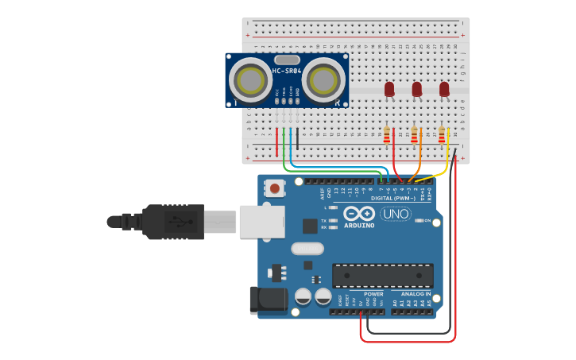

PROJECT 12: DISTANCE INDICATOR
Visual Parking Assistant
Mission Brief
Cars use sensors to warn drivers when they are backing up too close to a wall. In this project, you will replicate that system visually. Using an Ultrasonic Sensor and 3 LEDs, you will create a "Warning Light" that changes based on distance.
Key Components
- Arduino Uno R3
- HC-SR04 Ultrasonic Sensor
- 3x LEDs (Red, Yellow, Green)
- Resistors
- Jumper Wires
Circuit Diagram

Pin Connections
| Component Pin | Arduino Connection |
|---|---|
| Sensor VCC | 5V |
| Sensor GND | GND |
| Sensor Trig | Pin 12 |
| Sensor Echo | Pin 11 |
| Red LED | Pin 2 |
| Yellow LED | Pin 3 |
| Green LED | Pin 4 |
Step-by-Step Instructions
- Insert the HC-SR04 sensor into the breadboard. Connect VCC to 5V and GND to GND.
- Connect the Trig pin to Pin 12 and the Echo pin to Pin 11.
- Insert the 3 LEDs (Red, Yellow, Green) into the breadboard.
- Connect the Cathode (Short Leg) of each LED to the Negative Rail via a resistor.
- Connect the Anodes (Long Legs) as follows: Red to Pin 2, Yellow to Pin 3, Green to Pin 4.
- Upload the code below.
Arduino Code
/* Project 12 - Distance Indicator
* Green = Far, Yellow = Close, Red = Too Close
*/
const int trigPin = 12;
const int echoPin = 11;
const int redLed = 2;
const int yellowLed = 3;
const int greenLed = 4;
long duration;
int distance;
void setup() {
pinMode(trigPin, OUTPUT);
pinMode(echoPin, INPUT);
pinMode(redLed, OUTPUT);
pinMode(yellowLed, OUTPUT);
pinMode(greenLed, OUTPUT);
Serial.begin(9600);
}
void loop() {
// 1. Send Pulse
digitalWrite(trigPin, LOW);
delayMicroseconds(2);
digitalWrite(trigPin, HIGH);
delayMicroseconds(10);
digitalWrite(trigPin, LOW);
// 2. Read Echo
duration = pulseIn(echoPin, HIGH);
// 3. Calculate Distance
distance = duration * 0.034 / 2;
Serial.print("Distance: ");
Serial.println(distance);
// 4. Indicator Logic (Reset all first)
digitalWrite(redLed, LOW);
digitalWrite(yellowLed, LOW);
digitalWrite(greenLed, LOW);
if (distance < 10) {
// STOP! (Too close)
digitalWrite(redLed, HIGH);
}
else if (distance < 20) {
// WARNING (Getting closer)
digitalWrite(yellowLed, HIGH);
}
else {
// SAFE (Far away)
digitalWrite(greenLed, HIGH);
}
delay(100);
}
How It Works
- Zone Logic:
-
Thresholds:
We define three zones based on distance:
1. Danger Zone: Less than 10cm.
2. Warning Zone: Between 10cm and 20cm.
3. Safe Zone: More than 20cm. -
Exclusive States:
Unlike a bar graph where lights "stack" up, here we turn off all lights at the start of the loop and only turn ON the one that matches the current zone. This acts like a traffic signal.
Expected Output
Far Away (>20cm): Green LED is ON.
Approaching (10-20cm): Yellow LED turns ON.
Very Close (<10cm): Red LED turns ON. Move your hand back and forth to see the lights switch.
What You Learned
- How to create multiple logical zones using `if / else if / else`.
- Visualizing distance measurements without a screen.
- Coordinating sensors with multiple outputs.
Next Steps / Extension Ideas
Combine this with a buzzer! Make the buzzer beep slowly in the Yellow zone and give a continuous tone in the Red zone.